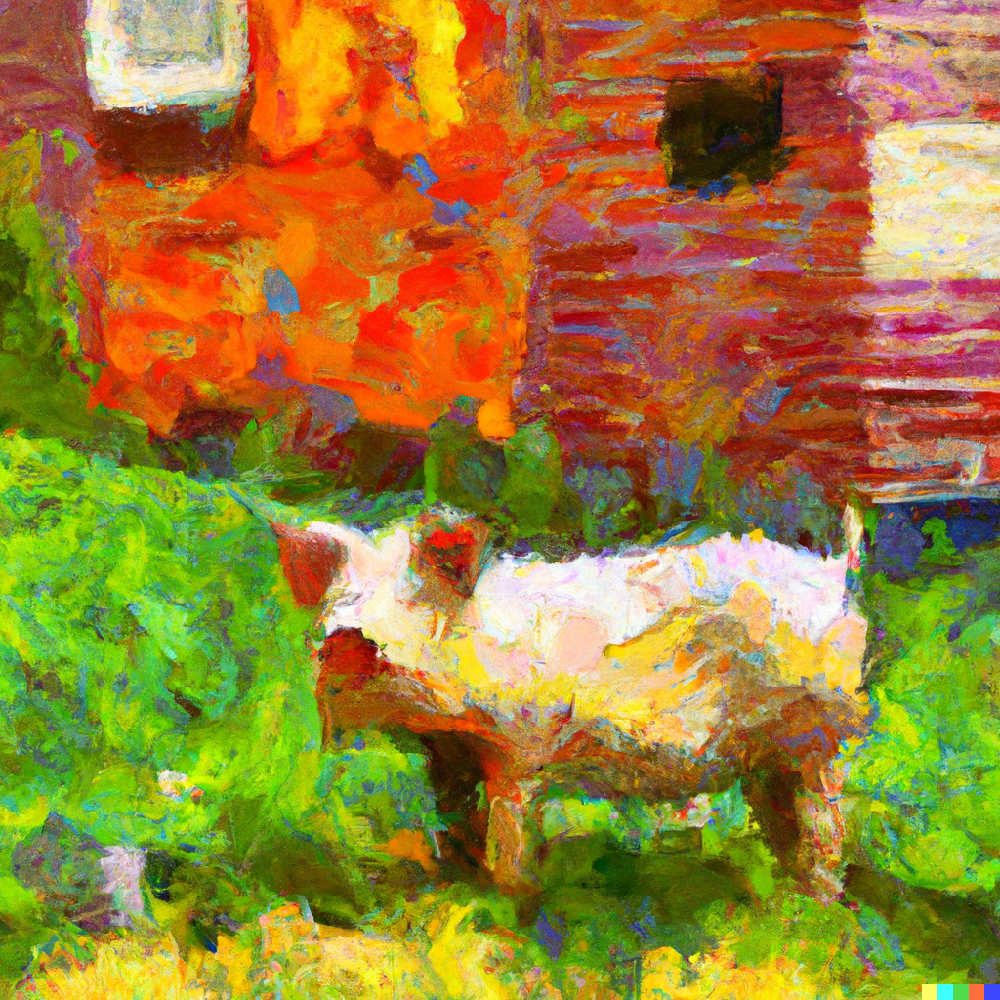

The three little pigs of Data Storytelling:
Building a narrative that stands strong
October 12, 2023
In a world full of skeptics and doubters it is becoming increasingly difficult to make strong claims that hold up. Once upon a time it might have been easier to tell a narrative that held up, but today it requires gathering solid data, using it find valuable insights, and presenting it in a way that paints a clear picture for your audience to see exactly what you are trying to tell them. Much like the fables many of us were told as kids, presenting data involves telling a clear story with an end goal in mind. Many of you have probably heard the story of the three little pigs and the big bad wolf. In the original tale, the pigs each build their own houses to protect themselves from the wolf, with some being more effective than others. Just like this story, our own ways of presenting data can have strengths and weaknesses that either protect you or make you vulnerable to the big bad skeptics. Using this metaphor, I will teach you how to tell a story using data and share the fundamentals to making it rock solid.
The Straw House
The first pig built a house of straw. It was flimsy and it was weak. Like this house, people often use weak information to tell their story. From anecdotal data to superficial insights, it is not strong enough. One example of this is gathering data by asking employees how well the company is doing. This data is unverifiable and not even quantitative. When we build a story using weak data, it falls apart at the first sign of criticism. This data tells us nothing about the company and when the wolf shows up asking what this means in, your narrative will fall as flat as straw on the ground.
The Stick House
The second pig built his house of sticks. This represents basic analysis performed on good data, and although this is better than straw, it is still not up to the highest standards of storytelling. The sticks, much like good data, provide a good foundation, but when we limit our analysis to basic methods, such as simple or vague graphs and charts, we fail to generate compelling findings. Let’s say you have good sales data, you’ve cleaned it by removing missing values and outlier data points, organized it by merging multiple data sets into one, but then you only made a few graphs showing yearly sales data and customer demographics. While the data is solid, the analysis is not. A narrative like this lacks luster; it leaves your audience basic facts and little else. When the wolf shows up asking for more, you find yourself without answers, leaving your narrative in pieces, just like the house of sticks.
The Brick House
The last pig, who must have studied data science at Hambridge University, was smart and made his house out of brick and mortar. He filled in all the cracks and had a solid foundation right from the start. He represents those who combine solid data with astute methods such as regression and time series analysis, machine learning algorithms or predictive models to conduct thorough analysis and craft compelling narratives. He spent the time finding and cleaning the data, and then using models and visuals to show insights beyond what the surface level data is telling us. This might be compared to using a predictive model on customer data combined with product sales and detailed market data to find answers to questions about what demographic to target with upcoming products and then compiling it in a comprehensive report. This is how you make a story that is unshakable. You need to dig below the obvious conclusions and find the data and answers that make your narrative so strong that when the doubters come knocking at your door, they’ve got nothing to say.
Conclusion: Building Your Strong Narrative
There will anyways be wolves in the world; they’re the people looking for reasons not to believe what you’re trying to tell them. They will tear apart the first two types of stories, but when they get to the last one, they will have no choice but to listen because you used trusted method to find great conclusions and answer questions. We can learn from that last pig about how building a strong narrative is a lot like building a house. You need to start with a good foundation of reliable data and build it up brick by brick using insights found from your analysis using the methods above. And by doing this you’ll live happily ever after knowing that your story stands strong.